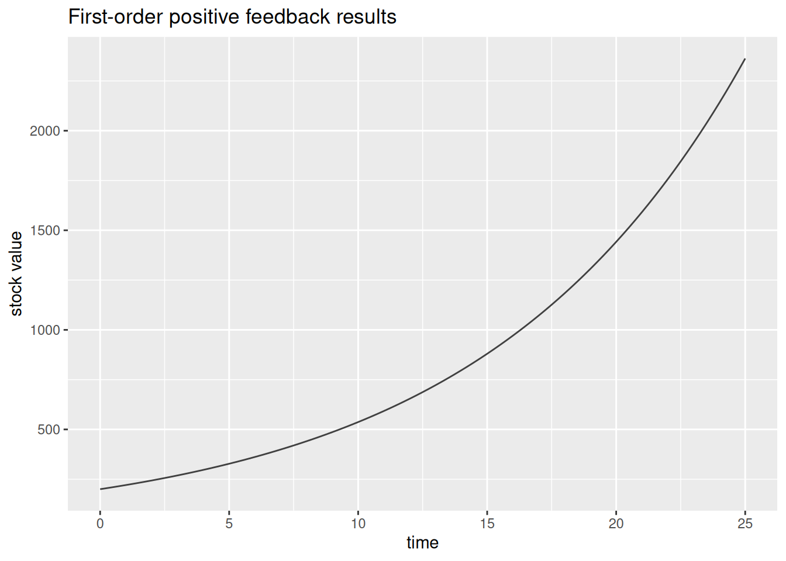
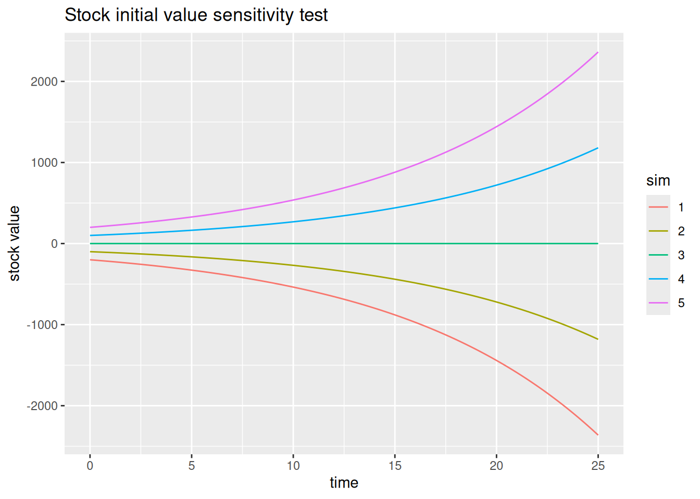
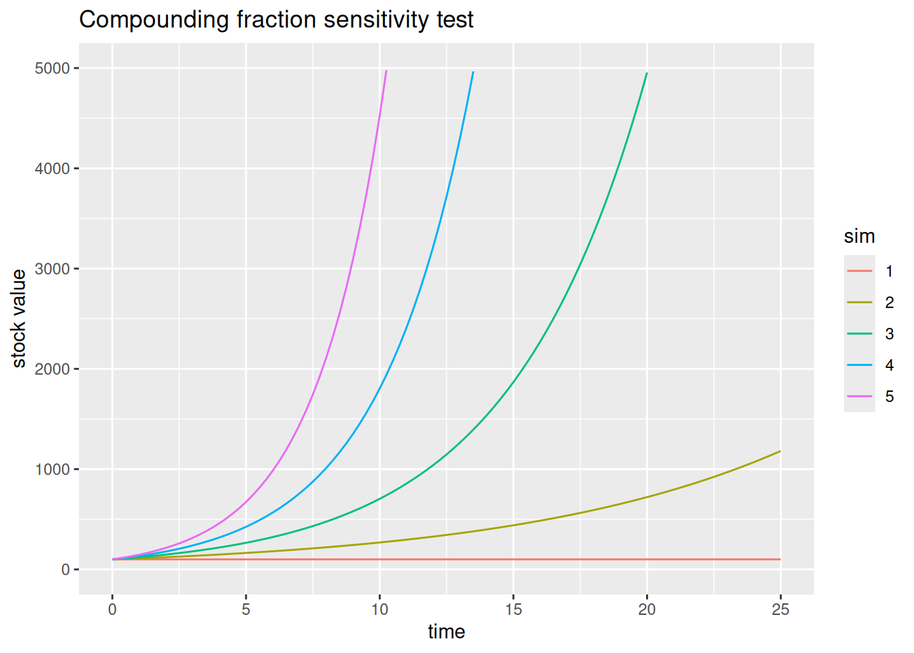

library(deSolve)
library(tidyverse)SD Tutorial 2: Behavior of First-Order Positive Feedback Systems
Sensitivity analysis using deSolve and purrr
Required R packages
Acknowledgement
The core content behind this tutorial derives from the Road Maps curriculum, developed by the System Dynamics in Education Project (SDEP) at MIT under the direction of Professor Jay Forrester. I’d like to give a personal thanks to Lees Stutz of the Creative Learning Exchange (CLE) for introducing me to the Road Maps curriculum, and for supporting my own SD journey.
With the rapid growth of data science, the purpose of this tutorial is to place the power of SD in the hands of a new generation of analysts and data scientists by including supplementary tutorials and reproducible code in R. Source material for this tutorial comes from Generic Structures: First order positive feedback loops
Generic structure system behavior
The generic structure of a first order positive system can be shown as follows.

To explore the different behaviors possible from this system, we will use the R model developed in Tutorial 1. We’ll make some adjustments to the model, however, so we can easily run several simulations at once with different input values.
We will first experiment by testing the effects of changing the initial value of the stock. We’ll give the stock initial values of -200, -100, 0, 100, and 200 for simulation runs 1 through 5 respectively. The compounding fraction will be kept constant at 0.1.
R Modelling Tutorial
First, wrap up the entire simulation model into a single nested function.
# define single function with all model parameters as arguments
first_order_pos_feedback <- function(sim = 1,
stock,
compounding_fraction,
start,
finish,
step) {
# model inputs
sim_time <- seq(from = start,
to = finish,
by = step)
stocks <- c(stock = stock)
params <- c(compounding_fraction = compounding_fraction) # (unit/unit)/time
# define system model
system_model <- function(time, stocks, params, sim){
with(as.list(c(stocks, params)),
{flow <- compounding_fraction * stock # people/year
ds_dt <- flow
return(list(c(ds_dt),
change_in_stock = flow,
sim = sim))}
)
}
# runs ode solver and tidy data
sim_data <- ode(times = sim_time, y = stocks, parms = params,
func = system_model, method = "euler", sim = sim) %>%
as_tibble() %>%
relocate(sim, .before = time) %>%
pivot_longer(-c(sim:time)) %>%
mutate(value = as.numeric(value),
time = as.numeric(time),
sim = as.character(sim))
return(sim_data)
}Let us test our new function and plot one set of results to see how it works. Plot only the behavior of the stock.
# test simulation run 1
first_order_pos_feedback(stock = 200,
compounding_fraction = 0.1,
start = 0,
finish = 25,
step = 0.25) %>%
filter(name == "stock") %>%
ggplot(aes(x = time, y = value)) +
geom_line(color = "grey25") +
labs(title = "First-order positive feedback results",
y = "stock value")
Now what we’d like to do is directly compare the results of running the simulation for the five initial values of the stock as mention above. We’ll accomplish this using the purrr package and iterating the function we just created over a list of initial values that we create.
# stock initial values
stocks_list <- c(-200, -100, 0, 100, 200)
# sim runs
sim_runs <- seq_along(stocks_list)
# map
sim_results <- pmap_dfr(list(sim = sim_runs,
stock = stocks_list),
.f = first_order_pos_feedback,
compounding_fraction = 0.1,
start = 0,
finish = 25,
step = 0.25)
# check results
glimpse(sim_results)Rows: 1,010
Columns: 4
$ sim <chr> "1", "1", "1", "1", "1", "1", "1", "1", "1", "1", "1", "1", "1",…
$ time <dbl> 0.00, 0.00, 0.25, 0.25, 0.50, 0.50, 0.75, 0.75, 1.00, 1.00, 1.25…
$ name <chr> "stock", "change_in_stock", "stock", "change_in_stock", "stock",…
$ value <dbl> -200.00000, -20.00000, -205.00000, -20.50000, -210.12500, -21.01…Immediately notice the number of rows in this new data set. Using pmap_dfr we have concatenated by rows each subsequent simulation run. Let’s now plot all the results so we can compare the effects of the different stock initial values on the system behavior.
sim_results %>%
filter(name == "stock") %>%
ggplot(aes(y = value, x = time, color = sim)) +
geom_line() +
labs(title = "Stock initial value sensitivity test",
y = "stock value")
Let us now explore what accelerates or slows the exponential growth of a system. We will study the effect of changing the value of the compounding fraction while keeping the initial value of the stock constant. The compounding fraction will take values of 0, 0.1, 0.2, 0.3, and 0.4 for runs 1 through 5 respectively. The initial value of the stock will be kept constant at 100.
# compounding fraction values
fraction_list <- c(0, 0.1, 0.2, 0.3, 0.4)
# sim runs
sim_runs <- seq_along(fraction_list)
# map and plot
pmap_dfr(list(sim = sim_runs,
compounding_fraction = fraction_list),
.f = first_order_pos_feedback,
stock = 100,
start = 0,
finish = 25,
step = 0.25) %>%
filter(name == "stock") %>%
ggplot(aes(y = value, x = time, color = sim)) +
geom_line() +
scale_y_continuous(limits = c(0, 5000)) +
labs(title = "Compounding fraction sensitivity test",
y = "stock value")
Conclusion
Understanding how to code and perform sensitivity tests is extremely important in SD modelling. Once you introduce feedback into a system, behavior can change dramatically with only slight tweaks of parameters. Sensitivity testing can help you understand the key leverage points in your system.